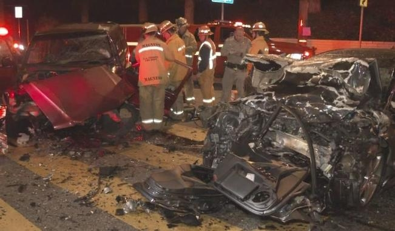

News
Sacramento Car Accident Claims
Sacramento Car Accident Claims
Medical Expenses
Lost Wages
Pain and Suffering Compensation
Longterm Disability
Emotional Distress
Insurance Negotiations
Insurance Negotiations
Claim Filing Process
Settlement Offers
Policy Limits and Coverage
UninsuredUnderinsured Motorist Claims
Bad Faith Insurance Practices
Legal Representation in Court
Legal Representation in Court
Litigation Process
Trial Preparation
Evidence Gathering
Expert Witness Testimony
Jury Selection
About Us
Contact Us

Expert Witness Testimony
Common Causes of Car Accidents in Sacramento
Common Causes of Car Accidents in Sacramento
Expert Witness Testimony
Sacramento Car Accident Lawyer
More here:
https://lawyers.findlaw.com/profile/view/4912344_1
https://www.yelp.com/biz/moseley-collins-sacramento-3
https://lawyers.justia.com/lawyer/moseley-cary-collins-iii-119369
Understanding Your Legal Rights and Responsibilities
Gathering Evidence and Documentation for Your Claim
Role of Insurance Companies in Car Accident Claims
Hiring a Sacramento Car Accident Lawyer
Potential Compensation and Settlement Options
Frequently Asked Questions
What qualifications should an expert witness have in a car accident case?
They should have relevant education, professional experience, certifications, and a proven track record of providing reliable testimony in similar cases.
Expert Witness Testimony